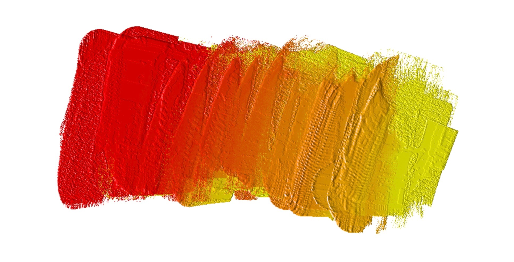
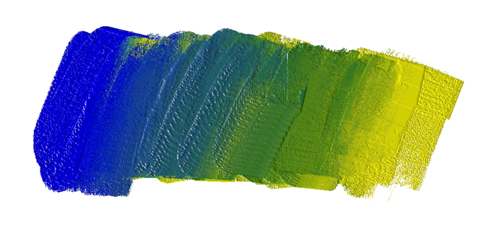
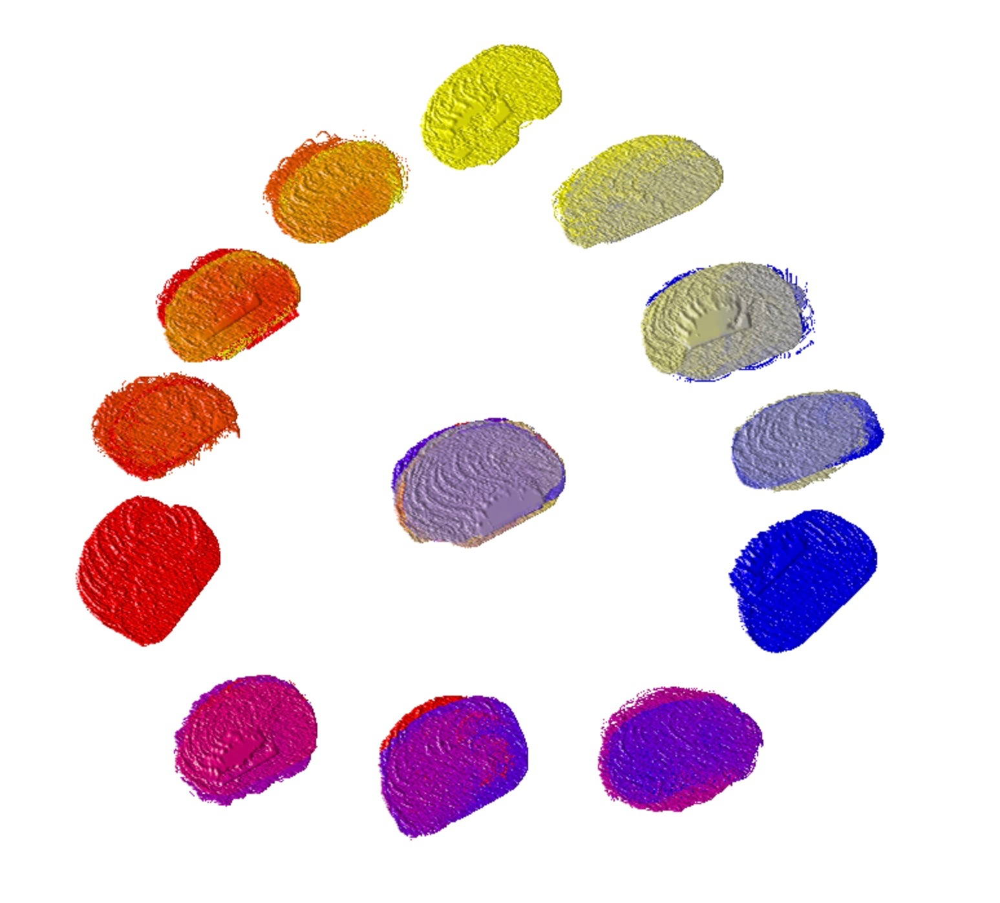

The application simulates the nature painting processes. Color blending is a primary feature for a painting solution. Of course, we support it. Furthermore, we simulates the real color process in the Painting process. We target to provide the following advanced features
Traditional software works with color in ways that are faithful to the way machines display color, which is based on light emission. The colour of dyes and pigments is based on light absorption. The blend of light emission is different to the one of light absorption for some colors. For example, with light emission, Yellow blended with Blue produces Gray. But it is Green in Light absorption. Therefore, use of light emission system for Painting not only unintuitive to users, but also gives a wrong result in gradient.
| Light Emission | Light Absorption | |
|---|---|---|
| Gradient: Red to Yellow |  | |
| Gradient: Blue to Yellow | |
 |
| Gradient: Red to Blue | |
|
| Color Wheel |  | |
The gradient from Red to Yellow and from Red to Purple can be produced using Light emission blending. But only Light absorption blending can blend the gradient from Blue to Yellow for Green, and Black from Red, Blue and Yellow. And more general speaking, the blending in Light emission tends to White, and the blending in Light absorption tends to Black.
| Our Simulation | Real Oil Blending | |
|---|---|---|
| Gradient: Blue to Yellow |
|
|
| Gradient: Red to Blue | |
|
| Gradient: Red to Yellow | |
|
| Color Wheel | |
|
Our application uses the system of Light Absorption, the primitive colors are Red, Yellow and Blue. So you can blend colors in the same way as real Oil Painting with a Limited Palette.
Our Painting Tools like Knife and Brush are a Color carrier. It can take some color from one location on Painting Support and put to another location. All properties are kept during the transfer such as quantity and density.
During the painting, some Painting Tools like Knife and Brush collects different colors in different locations. It forms a Color Pattern.
| Description | Screen Shot |
|---|---|
|
The creation of Color Pattern
Pattern is kept in the Painting tool, it can be saved in Application |
 |
| Dot Stroke with Color Pattern |

|
| Different Painting strokes with the same Color Pattern |
|
A Color Pattern can be saved in two ways:
| Color Pattern Management | Description |
|---|---|
|
Stored In the current Artwork |
It is a Color Pattern associeted with this Painting Tool. It can be reused with the option Auto Reset. |
|
Stored In the Application |
A separated Painting Tool will be created. |